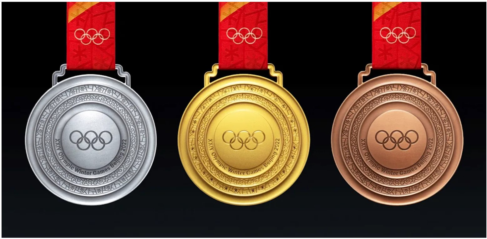
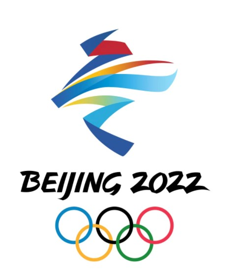

LATEST NEWS
Olympic Winter Games Beijing 2022 medal designs unveiled
The Beijing 2022 medals - named "Tong Xin", meaning "together as one" - are composed of five rings and a centre; the design is based on Chinese ancient jade concentric circle pendants with the five rings representing the Olympic spirit to bring people together and the splendour of the Olympic Winter Games being shared all over the world.
Olympic and Paralympic Winter Games Beijing 2022 - Updates on Spectators, Vaccination and COVID-19 Countermeasures
Considering the above objective, the IOC and IPC fully respect the principles established by Beijing 2022. These principles are based on wide-ranging consultations with international experts and the Chinese authorities, as well as the experience of Olympic and Paralympic stakeholders. The principles presented by Beijing 2022 will be detailed in the Playbooks. The first version of these Playbooks will be released in late October. A second version will then be published in December.
The Olympic Winter Games Beijing 2022 will take place between 4 and 20 February, while the Paralympic Winter Games will be held from 4 until 13 March.